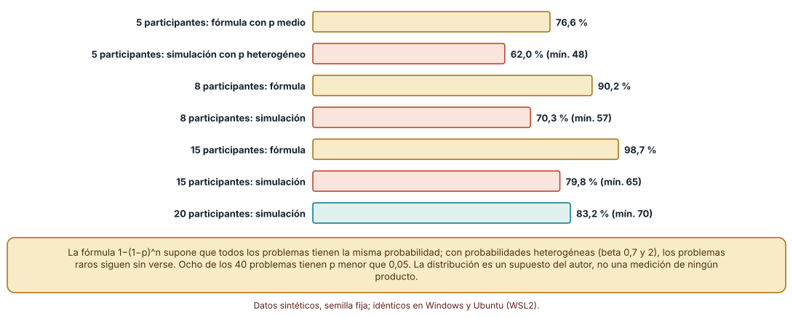
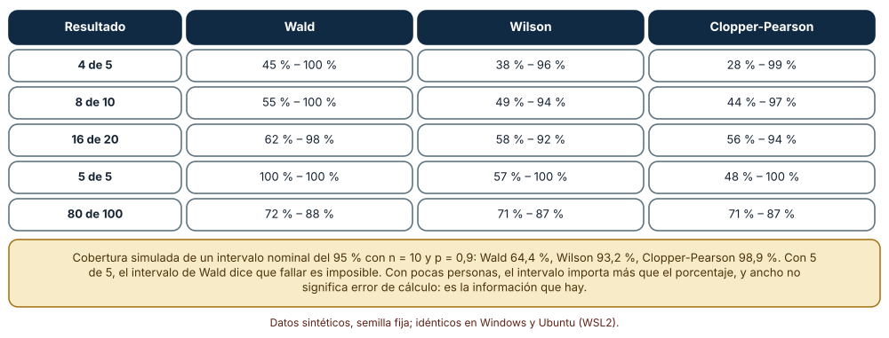
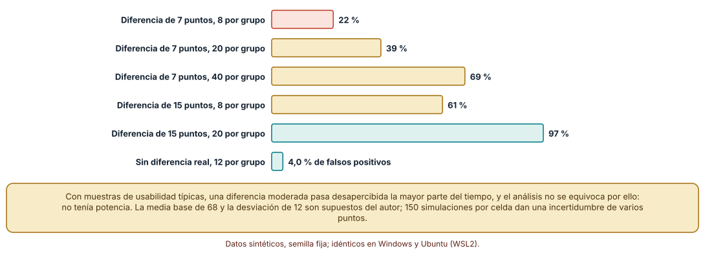

← SE-177 — Internacionalización, localización y formatos culturales · ↑ Parte 14 · 📚 Índice completo · 🌐 Portal · SE-179 — Taller: auditar y reparar un flujo excluyente →
Punto profesional y fundamento pedagógico
Punto profesional. La clase existe para que planifiques una evaluación de usabilidad con un tamaño de muestra, unas métricas y unos intervalos que digan lo que realmente se puede concluir con pocas personas, y para que distingas un hallazgo cualitativo de una estimación cuantitativa.
Por qué aparece aquí. Se sitúa después de Internacionalización, localización y formatos culturales y antes de Taller: auditar y reparar un flujo excluyente: SE-177 dejó los mensajes y formatos en varias lenguas; esta clase pregunta cómo se sabe si las personas logran la tarea con ellos. Deja el protocolo de evaluación y la manera de informar incertidumbre que SE-179 y SE-180 aplicarán.
Error conceptual que debe corregir. Creer que cinco participantes bastan para «encontrar el 85 % de los problemas» o que un porcentaje de éxito sobre ocho personas es una estimación precisa: la fórmula supone problemas igual de probables, un porcentaje de pocas personas tiene un intervalo muy ancho y una diferencia moderada entre diseños casi nunca se detecta con muestras pequeñas.
Secuencia de aprendizaje. Antes de leer la solución, predices qué fracción de 40 problemas de probabilidades distintas encuentran cinco participantes, qué intervalo da «4 de 5» con tres métodos y con qué probabilidad detecta una comparación de dos diseños una diferencia de 7 puntos de SUS; después simulas, calculas intervalos exactos y estimas potencia por permutaciones. La secuencia usa predicción, explicación propia, contraste y recuperación. ICAP distingue participación de construcción de conocimiento; How People Learn II exige conectar conocimiento previo, contexto y transferencia; la práctica de recuperación respalda producir de nuevo la explicación tras una demora; y Education for Life and Work exige devolución que explique la causa del error.
Evidencia de aprendizaje. usability-log.md con el protocolo de la evaluación de la entrega, la comparación entre la fórmula y la simulación, los intervalos con tres métodos y la potencia de una comparación. Debe distinguir lo que sale de la muestra (hallazgos cualitativos) de lo que se estima (porcentajes con intervalo). Debe contener predicción previa, observación, explicación causal, contraejemplo y qué hallazgo haría retirar la conclusión.
Límite de la conclusión. La distribución de probabilidades de los problemas (beta 0,7 y 2), la media y desviación de la escala (68 y 12) y las 150 simulaciones por celda son supuestos del autor; no se evaluó a ninguna persona ni se midió ningún producto, y los resultados describen el comportamiento de métodos, no de una población.
Trazabilidad fuente → afirmación
| Fuente primaria u oficial | Afirmación que respalda | Lo que no prueba |
|---|---|---|
| Nielsen y Landauer, «A mathematical model of the finding of usability problems» (INTERCHI, 1993) | Propone que la proporción de problemas hallados crece como 1 − (1 − p)^n con p la probabilidad media de hallazgo. | No dice que p sea igual para todos los problemas ni que se mantenga entre productos. |
| Faulkner, «Beyond the five-user assumption» (Behav. Res. Methods, 2003) | Muestra con datos que cinco participantes pueden encontrar solo una parte de los problemas y que la variabilidad entre muestras es grande. | No fija un tamaño de muestra universal. |
| Brown, Cai y DasGupta, «Interval estimation for a binomial proportion» (Stat. Sci., 2001) | Compara intervalos para una proporción y muestra que el de Wald cubre mal con pocas observaciones. | No elige un intervalo para tu estudio. |
Antes de empezar
Recupera lo aprendido en SE-177: cada suposición de una lengua rompe algo. La pregunta activa es: ¿cuántas personas hacen falta para qué conclusión, y qué intervalo acompaña a cada número que voy a informar?
Prerrequisitos
- Haber completado
SE-177o poder explicar por qué una suposición de una sola lengua rompe un mensaje. - Python 3.11 o posterior y un terminal; los cálculos usan solo la biblioteca estándar (
random,statistics,math). - Trabajar con la evaluación de la entrega y datos sintéticos; no se recluta a nadie.
Problema auténtico
El equipo prueba la entrega con cinco personas, cuatro la completan, y la conclusión es «el 80 % lo logra». Se afirma que cinco bastan para hallar el 85 % de los problemas y se compara un diseño nuevo con el actual con ocho personas por grupo, sin diferencia significativa: «el rediseño no mejora». Una propuesta suma más preguntas al cuestionario; otra compra un panel; otra declara el rediseño ganador por la media.
Objetivos observables
Al terminar podrás:
- calcular con una simulación qué fracción de problemas halla una muestra cuando sus probabilidades difieren;
- calcular intervalos para una proporción con tres métodos y explicar cuándo no coinciden;
- estimar por simulación la potencia de una comparación entre dos diseños según el tamaño de muestra y la diferencia;
- distinguir un hallazgo cualitativo de una estimación cuantitativa y qué lenguaje corresponde a cada uno;
- escribir un protocolo de evaluación con tareas, métricas, tamaño y límites que otra persona pueda repetir.
Mapa conceptual
Ver la notación fuente del diagrama
flowchart LR
A[Pregunta de la evaluación] --> B[Tareas y métricas]
B --> C[Muestra y reclutamiento]
C --> D[Observación y registro]
D --> E[Hallazgos cualitativos]
D --> F[Estimaciones con intervalo]
E --> G[Decisión]
F --> G
G -->|nueva pregunta| AEl mapa se lee de izquierda a derecha con dos salidas de la observación: lo que se ve (hallazgos) y lo que se cuenta (estimaciones con su incertidumbre). Ambas alimentan una decisión y la decisión abre nuevas preguntas. No es un proceso lineal de investigación.
Temas y por qué importan
| Tema | Por qué cambia una decisión profesional | Evidencia mínima |
|---|---|---|
| Qué responde una evaluación | Alinea el método con la pregunta. | Predicción, traza causal y contraejemplo de Qué responde una evaluación en usability-log.md |
| Tareas, métricas y criterio de éxito | Define de antemano qué cuenta como lograrlo. | Predicción, traza causal y contraejemplo de Tareas, métricas y criterio de éxito en usability-log.md |
| Tamaño de muestra y descubrimiento de problemas | Evita confiar en una regla de tamaño único. | Predicción, traza causal y contraejemplo de Tamaño de muestra y descubrimiento de problemas en usability-log.md |
| Intervalos para una proporción | Informa lo que se sabe y lo que no con pocas personas. | Predicción, traza causal y contraejemplo de Intervalos para una proporción en usability-log.md |
| Comparar diseños y potencia | Evita declarar que no hay diferencia cuando no se podía ver. | Predicción, traza causal y contraejemplo de Comparar diseños y potencia en usability-log.md |
Conceptos y decisiones
1. Qué responde una evaluación
Una evaluación formativa busca problemas para corregirlos: con pocas personas y tareas realistas se observa dónde se atascan y por qué. Una evaluación sumativa busca una cifra o una comparación y exige muestras mayores, tareas fijadas de antemano y un criterio de decisión. Confundirlas produce conclusiones de ambos tipos mal sustentadas: un porcentaje de cinco personas no es una estimación y un hallazgo cualitativo no necesita un valor p.
2. Tareas, métricas y criterio de éxito
Las métricas habituales son éxito de la tarea (binaria), tiempo, errores y una escala subjetiva como la System Usability Scale (SUS). Cada una responde a algo distinto y se informa con su incertidumbre. El criterio de éxito de cada tarea (por ejemplo, «el recibo es visible y la persona lo identifica») se escribe antes de la sesión, y también cuándo se da por rendida una tarea. Sin eso, el éxito se decide con la observación y cambia según quién observe.
3. Tamaño de muestra y descubrimiento de problemas
La fórmula de Nielsen y Landauer supone una probabilidad igual para todos los problemas. Con probabilidades heterogéneas, los frecuentes aparecen pronto y los raros quedan sin ver, de modo que la fracción hallada con n personas es menor que la predicha. La conclusión práctica es iterar con grupos pequeños y diferentes tareas, y no suponer que una ronda de cinco halla casi todo.
4. Intervalos para una proporción
Con pocas personas, un porcentaje tiene un intervalo muy ancho. El intervalo de Wald (normal) es el más conocido y es el peor: da anchos cero cuando todos acertaron y cubre mal. El de Wilson y el exacto de Clopper-Pearson son mejores con muestras pequeñas; el segundo es conservador. Informar «4 de 5 (intervalo del 95 %: de 28 % a 99 %)» dice lo que el estudio permite afirmar.
5. Comparar diseños y potencia
La potencia es la probabilidad de detectar una diferencia real de un tamaño dado. Con ocho personas por grupo y una diferencia de 7 puntos de SUS, casi nunca se detecta; «sin diferencia significativa» no equivale a «sin diferencia». La respuesta honesta a una comparación sin potencia es informar el tamaño observado con su intervalo, no declarar un empate, y decidir si compensa un estudio mayor o una decisión basada en otros criterios.
Cinco participantes y problemas de probabilidad distinta
Se simularon 40 problemas cuya probabilidad de que una persona los encuentre sigue una distribución beta (0,7 y 2): media 0,25, mediana 0,19 y 8 problemas con probabilidad menor de 0,05. La fórmula con la probabilidad media predice 76,6 % con 5 participantes, 90,2 % con 8, 96,9 % con 12 y 98,7 % con 15. La simulación de 500 estudios halla 62,0 % con 5 (mínimo 48 %), 70,3 % con 8 (mínimo 57 %), 76,5 % con 12, 79,8 % con 15 y 83,2 % con 20 (mínimo 70 %). La heterogeneidad hace que la fórmula sobreestime lo hallado en todos los tamaños.
probs = [r.betavariate(0.7, 2.0) for _ in range(40)]
media = statistics.mean(probs)
formula = 1 - (1 - media) ** n
hallados = sum(any(r.random() < p for _ in range(n)) for p in probs) / 40
Cómo leer la figura. Las barras amarillas son la fórmula con la probabilidad media; las coral son la simulación con probabilidades distintas; la diferencia es lo que la fórmula sobreestima. Dónde deja de valer: la distribución beta es un supuesto del autor; en un producto real la forma de las probabilidades es desconocida y depende de las tareas y de las personas, y los problemas no son independientes.
Tres intervalos para pocas personas
Con 4 éxitos de 5, el intervalo del 95 % es de 45 % a 100 % con Wald, de 38 % a 96 % con Wilson y de 28 % a 99 % con Clopper-Pearson. Con 8 de 10: 55–100, 49–94 y 44–97; con 16 de 20: 62–98, 58–92 y 56–94; con 5 de 5, Wald da 100–100 (dice que fallar es imposible), Wilson 57–100 y Clopper-Pearson 48–100; con 80 de 100 los tres coinciden en 71–87 aproximadamente. La cobertura simulada de un intervalo del 95 % con n = 10 y p = 0,9 es 64,4 % para Wald, 93,2 % para Wilson y 98,9 % para Clopper-Pearson.
def wilson(k, n, z=1.96):
p = k / n; d = 1 + z * z / n
c = p + z * z / (2 * n)
h = z * math.sqrt(p * (1 - p) / n + z * z / (4 * n * n))
return (c - h) / d, (c + h) / d
Cómo leer la figura. Cada fila es un resultado; las columnas son tres métodos; compara el ancho de cada intervalo. Dónde deja de valer: la cobertura se simuló con una sola probabilidad real y observaciones independientes; las personas de un estudio de usabilidad no son una muestra aleatoria de la población, y ningún intervalo corrige un reclutamiento sesgado.
Potencia de una comparación entre dos diseños
Se simuló la comparación de dos grupos con SUS normal (media 68, desviación 12) mediante una prueba de permutación con 200 permutaciones y 150 estudios por celda. Con una diferencia real de 7 puntos, la probabilidad de detectarla es 11 % con 5 por grupo, 22 % con 8, 27 % con 12, 39 % con 20 y 69 % con 40. Con una diferencia de 15 puntos, 35 %, 61 %, 79 %, 97 % y 100 %. Sin diferencia real, la proporción de falsos positivos es 2,7 %, 4,0 % y 4,7 % con 5, 12 y 40 por grupo, en torno al 5 % nominal.
obs = abs(mean(a) - mean(b))
perm = sum(abs(mean(pool[:n]) - mean(pool[n:])) >= obs for _ in range(200))
significativo = (perm + 1) / 201 < 0.05
Cómo leer la figura. Cada barra es la probabilidad de detectar la diferencia indicada con ese tamaño de grupo; la última barra comprueba que sin diferencia real el error se mantiene en torno al 5 %. Dónde deja de valer: la media, la desviación y la normalidad son supuestos; 150 estudios por celda dejan una incertidumbre de varios puntos porcentuales; la escala SUS no es normal en un producto real.
Definiciones de trabajo
- evaluación formativa: evaluación cuyo objetivo es encontrar problemas para corregirlos.
- evaluación sumativa: evaluación cuyo objetivo es estimar un resultado o comparar alternativas.
- intervalo de confianza: rango calculado con un procedimiento que, repetido, cubre el valor verdadero con una frecuencia nominal.
- potencia estadística: probabilidad de detectar una diferencia real de un tamaño dado con un procedimiento y una muestra.
- System Usability Scale: cuestionario de diez preguntas que da una puntuación de 0 a 100 de usabilidad percibida.
Las definiciones son operativas para la plataforma de entregas. No convierten términos con historia más amplia en sinónimos y deben contrastarse con la documentación primaria enlazada al final.
Ejemplo mínimo
El fragmento calcula el intervalo de Wilson de 4 éxitos de 5. Antes de ejecutarlo, predice si el límite inferior es mayor o menor que 50 %.
import math
def wilson(k, n, z=1.96):
p = k / n
d = 1 + z * z / n
c = p + z * z / (2 * n)
h = z * math.sqrt(p * (1 - p) / n + z * z / (4 * n * n))
return round((c - h) / d, 2), round((c + h) / d, 2)
print(wilson(4, 5)) # (0.38, 0.96)El límite inferior es 38 %: con cinco personas no se descarta que menos de la mitad lo logre. Prueba con 8 de 10 y compara el ancho; registra versión y salida.
Ejemplo profesional
En la plataforma, cada evaluación de la entrega comienza con un protocolo: la pregunta, tres tareas con su criterio de éxito escrito, las métricas, el número de participantes con su razón y lo que no se podrá concluir. Se hacen rondas de cinco participantes con arreglos entre rondas para encontrar problemas, y las cifras se informan como «k de n» con un intervalo de Wilson. Una comparación entre diseños declara de antemano la diferencia que quiere poder detectar y su tamaño de grupo, y si no lo alcanza, se informa como exploratoria.
Compara el caso normal con una tarea que nadie completa, una que todos completan y una que depende de una persona con lector de pantalla. Un informe es apropiado cuando esos tres casos están descritos y las cifras llevan su intervalo; es peligroso cuando solo hay un porcentaje.
Práctica guiada
- Escribe la pregunta de la evaluación y decide si es formativa o sumativa.
- Define tres tareas con su criterio de éxito y de rendición antes de la sesión.
- Predice qué fracción de 40 problemas halla cada tamaño de muestra y simula con probabilidades heterogéneas.
- Calcula los tres intervalos para cuatro resultados y compáralos.
- Estima la potencia de una comparación para dos diferencias y cuatro tamaños de grupo.
- Escribe el protocolo con sus límites y lo que no se podrá concluir.
- Pide a otra persona que reconstruya el protocolo y las cifras solo desde
usability-log.md.
Ejercicios
- Heterogeneidad: repite la simulación con una distribución de probabilidades más concentrada (beta 3 y 9) y explica por qué la fórmula se acerca más.
- Intervalos: calcula los tres intervalos para 3 de 3 y para 0 de 6 y explica qué informarías.
- Potencia: estima cuántas personas por grupo necesitas para detectar 10 puntos con una potencia del 80 % con tu simulación.
- Redacción: reescribe «el rediseño no mejora la usabilidad» con la información que sí sustenta una comparación sin potencia.
Reto verificable
Entrega usability-log.md con el protocolo, la comparación entre fórmula y simulación, los tres intervalos y la estimación de potencia. Se aprueba si otra persona reproduce los números con las mismas semillas y puede nombrar una conclusión que el estudio no permite. No se aprueba por un número de participantes ni por un valor p.
Caso conductor
La plataforma de entregas es el caso conductor de la Parte 14. Esta clase deja el protocolo de evaluación de la entrega, la política de intervalos y la potencia de las comparaciones. SE-179 lo aplica a un flujo excluyente con una auditoría y una reparación, y SE-180 a un prototipo evaluado con personas. Cambia después un solo supuesto, la media de la probabilidad de hallazgo, y revisa qué tamaños de muestra y conclusiones dependían de él.
Preguntas frecuentes
¿Cinco participantes bastan?
Para una ronda formativa con arreglos entre rondas, a menudo sirven; no bastan para estimar un porcentaje ni para detectar diferencias moderadas. La cifra depende de lo que quieres concluir y de cuán heterogéneos sean los problemas.
¿Puedo informar un porcentaje con ocho personas?
Sí, como «k de n» con su intervalo. Un «80 %» sin intervalo da una precisión que el estudio no tiene.
¿Qué hago si no hay diferencia significativa?
Informa el tamaño observado con su intervalo y la potencia que tenías; con poca potencia, la ausencia de significación no dice nada. Decide si ampliar o si otros criterios (costo, riesgo, accesibilidad) deciden.
¿Mido la usabilidad solo con SUS?
No: SUS mide percepción global y no localiza problemas. Se combina con éxito, tiempo y observación de dónde se atascan, y se informa cada cifra con su incertidumbre.
Fallo controlado y diagnóstico
Reproduce el fallo clásico de la clase: declarar que no hay diferencia con un estudio sin potencia. Usa la comparación con 8 personas por grupo.
Registra síntoma, entrada mínima, hipótesis, observación que descarta cada hipótesis, causa, corrección y prueba de regresión. Síntoma: la comparación de dos diseños con 8 personas por grupo no da diferencia significativa y el equipo concluye que el rediseño no mejora. Hipótesis rivales: (a) el rediseño no mejora nada; (b) el estudio no tenía capacidad para verlo. Prueba: la simulación da una potencia del 22 % para 7 puntos con 8 por grupo: se pasa por alto una diferencia real casi cuatro de cada cinco veces. Conclusión: la causa es la falta de potencia, no la ausencia de efecto. Regresión: añade al protocolo la diferencia mínima de interés y la potencia calculada, e informa un intervalo del efecto. No cambies a la vez el tamaño y la métrica.
Errores comunes y cómo corregirlos
| Síntoma | Causa probable | Corrección |
|---|---|---|
| «El 80 % lo logra» con cinco personas | Se informó una proporción sin intervalo | Informar k de n con intervalo de Wilson o exacto |
| Se cree que cinco personas hallan el 85 % de los problemas | Se aplicó la fórmula con probabilidades iguales | Iterar con rondas pequeñas y no extrapolar el 85 % |
| «No mejora» tras una comparación pequeña | Sin potencia | Calcular la potencia y informar el efecto con intervalo |
| Cada observador decide distinto si hubo éxito | No se escribió el criterio de éxito | Criterio de éxito y de rendición antes de la sesión |
| Se promedian escalas sin distribución | Solo se informa la media | Informar mediana, dispersión y el intervalo |
Entorno y archivos clave
work/SE-178/
├── README.md
├── usabilidad/
│ ├── hallazgos.py
│ ├── intervalos.py
│ └── potencia.py
├── tests/test_usabilidad.py
└── evidence/usability-log.mdEl README declara plataforma, versión de Python, semillas y comandos. Los cálculos usan solo la biblioteca estándar y se ejecutaron con CPython 3.12.9 en Windows 11 y 3.12.3 en Ubuntu bajo WSL2: las salidas fueron idénticas. La simulación de potencia tarda aproximadamente un minuto. No se evaluó a ninguna persona.
Seguridad, ética y accesibilidad
- la participación en una evaluación exige consentimiento informado, derecho a retirarse y trato respetuoso de quien participa, con atención a las personas con discapacidad;
- las grabaciones y notas pueden identificar a las personas: se anonimizan, se guardan con acceso restringido y se borran según lo acordado;
- no se debe presionar a una persona para completar una tarea que no puede hacer: se registra el abandono como dato;
- ofrece una alternativa textual a cada tabla y figura y no uses el color como única señal;
- atribuye las fuentes y no copies cuestionarios con licencia sin permiso.
Puente hacia el trabajo con agentes
Un agente al que se le pide «analiza los resultados de la prueba de usabilidad» calculará medias y porcentajes y declarará un ganador, sin intervalos, sin potencia y sin distinguir lo observado de lo inferido. Pídele que informe «k de n» con intervalo, que calcule la potencia de la comparación y que separe los hallazgos cualitativos de las estimaciones. Revisa especialmente si dedujo una conclusión de una diferencia no significativa: es el mismo estudio sin potencia, ahora con apariencia de análisis.
Transferencia
Traslada el análisis a otra evaluación (el alta de un usuario en una aplicación o el pago de un servicio): simula la heterogeneidad, calcula los intervalos y estima la potencia. La transferencia está lograda cuando puedes explicar qué parte dependía de la plataforma de entregas y cuál no.
Evaluación y evidencia
| Criterio | Evidencia para aprobar |
|---|---|
| comprensión | explicación de por qué la fórmula de cinco participantes depende de un supuesto y de qué es la potencia |
| corrección | fracciones halladas, intervalos y potencias reproducibles con las mismas semillas |
| diseño | protocolo con tareas, criterios de éxito y límites de la conclusión |
| diagnóstico | reproducción del fallo «sin diferencia» con su regresión |
| incertidumbre | intervalos informados y supuestos de distribución declarados |
| reproducibilidad | versiones, comandos, salida y límites declarados |
Fuentes
- Nielsen y Landauer, «A mathematical model of the finding of usability problems» (INTERCHI, 1993) — modelo de hallazgo de problemas; autoridad: ACM.
- Virzi, «Refining the test phase of usability evaluation» (Human Factors, 1992) — tamaño de muestra y problemas hallados; autoridad: Human Factors.
- Faulkner, «Beyond the five-user assumption» (Behavior Research Methods, 2003) — variabilidad de los problemas hallados con pocos participantes; autoridad: Behavior Research Methods.
- Nielsen Norman Group: por qué cinco usuarios — contexto y condiciones de la regla de cinco; autoridad: Nielsen Norman Group.
- Wilson, «Probable inference, the law of succession, and statistical inference» (JASA, 1927) — intervalo de Wilson; autoridad: Journal of the American Statistical Association.
- Clopper y Pearson (Biometrika, 1934) — intervalo exacto para una proporción; autoridad: Biometrika.
- Brown, Cai y DasGupta, «Interval estimation for a binomial proportion» (Statistical Science, 2001) — comparación de intervalos; autoridad: Statistical Science.
- Bangor, Kortum y Miller, «An empirical evaluation of the System Usability Scale» (Int. J. Hum.-Comput. Interact., 2008) — uso y distribución de SUS; autoridad: International Journal of Human–Computer Interaction.
Cada fuente respalda el mecanismo indicado; ninguna demuestra que las probabilidades de hallazgo o la dispersión de SUS de la plataforma sean las simuladas. Esa afirmación depende de medirlas con personas reales.
- Python:
statistics— media, mediana y correlación usadas en las simulaciones. - Python:
random— semillas y distribuciones beta y normal.
Límites y siguiente paso
Se ejecutaron tres experimentos con datos sintéticos en Windows y Ubuntu (WSL2) con resultados idénticos. No se evaluó a ninguna persona ni se midió ningún producto, y la distribución de probabilidades de los problemas, la media y desviación de SUS y las 150 simulaciones por celda son supuestos del autor. La siguiente clase aplica la medición a un flujo excluyente.
Glosario
- evaluación formativa: evaluación cuyo objetivo es encontrar problemas para corregirlos.
- evaluación sumativa: evaluación cuyo objetivo es estimar un resultado o comparar alternativas.
- intervalo de confianza: rango calculado con un procedimiento que, repetido, cubre el valor verdadero con una frecuencia nominal.
- potencia estadística: probabilidad de detectar una diferencia real de un tamaño dado con un procedimiento y una muestra.
- System Usability Scale: cuestionario de diez preguntas que da una puntuación de 0 a 100 de usabilidad percibida.
← SE-177 — Internacionalización, localización y formatos culturales · ↑ Parte 14 · 📚 Índice completo · 🌐 Portal · SE-179 — Taller: auditar y reparar un flujo excluyente →